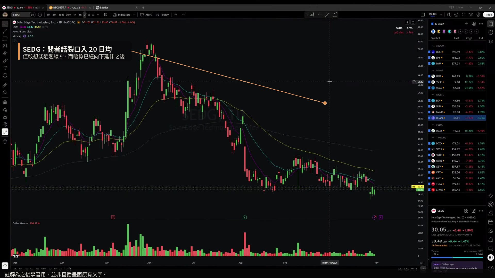
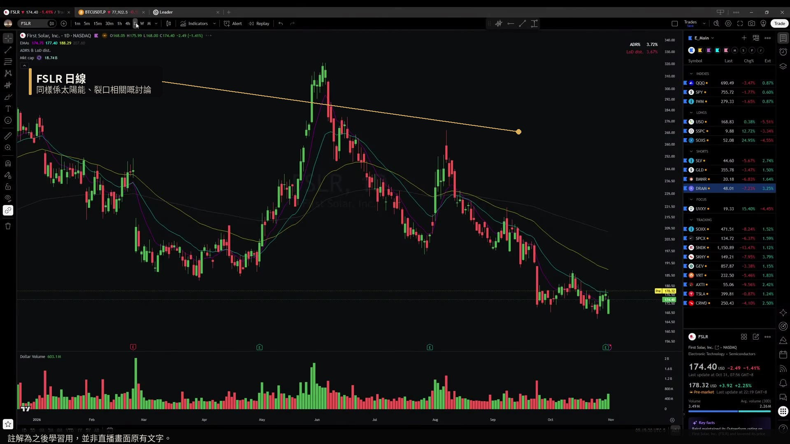
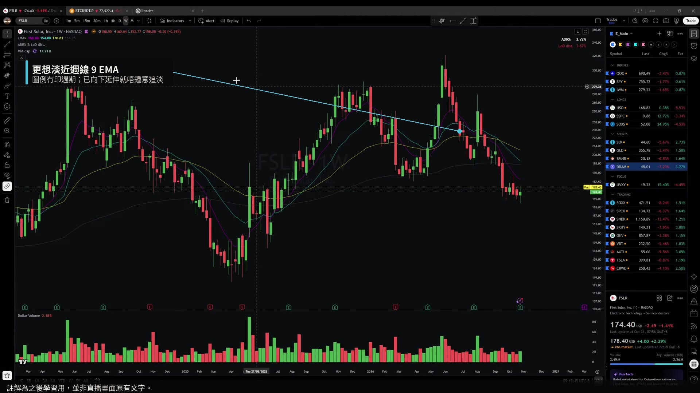

概要
唔鍾意在已經向下延伸之後先淡
有人問 First Solar、SolarEdge 裂口入 20 日均，可唔可以淡。佢較想淡近週線 9 EMA，不喜歡在大市或者個股已經向下延伸之後先淡。畫面先後出現 SEDG 日線同 FSLR 日線、週線。
圖一
SEDG：問者話裂口入 20 日均
直播 1:07:40

原話
Do you think solar stocks like First Solar and SEDG are good short candidate, gapping into the 20-day moving average? I prefer maybe shorting near the 9 EMA, the weekly nine. I just don't like shorting when the market is already getting extended to the downside.
你覺唔覺得 First Solar、SEDG 呢類太陽能，裂口入 20 日均，係好嘅淡選？我較想淡近 9 EMA，即係週線 9。我只係唔鍾意在市場已經向下延伸之後先淡。
YouTube 把 SEDG 寫成 Sedg。
點樣讀
重點不是否定太陽能可以淡，而係位置：較想靠近週線 9，而唔係已經延伸之後、只因為裂口入 20 日均就追。
圖二
FSLR 日線：同一條問答
直播 1:07:50

原話
I prefer maybe shorting near the 9 EMA, the weekly nine. I just don't like shorting when the market is already getting extended to the downside.
我較想淡近 9 EMA，即係週線 9。我只係唔鍾意在市場已經向下延伸之後先淡。
點樣讀
日線用來對一下問者講嘅 20 日均同裂口；佢真正想用嘅參考，係下面週線 9。
圖三
更想淡近週線 9 EMA
直播 1:08:05

原話
I prefer maybe shorting near the 9 EMA, the weekly nine.
我較想淡近 9 EMA，即係週線 9。
點樣讀
圖例冇印 9。註解只指較快週線均線嘅位置，唔寫死邊一條一定係 9。
附註
注意事項
- 圖例冇印均線週期。20 日均係問者提出，週線 9 係佢嘅回應。
- 畫面睇唔到成交價或者倉位。
免責聲明：呢份係教育拆解，唔係投資建議，亦唔好當作買賣指示。